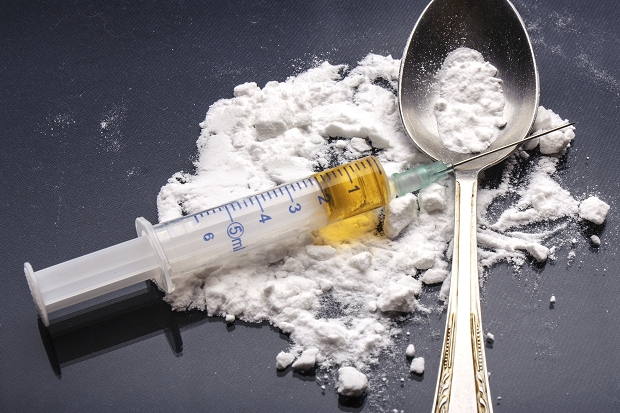

Type:
Heroin is a highly addictive narcotic drug derived from morphine which in turn is derived from the latex of the opium poppy. Heroin consumed by Hong Kong addicts is manufactured from opium poppies grown in the Golden Triangle and the drug is produced in a high purity (up to 90%), consumption ready state. In Hong Kong, heroin is normally consumed by injection or burning on tinfoil and inhaling the fumes. Heroin acts fast via either of these methods, taking 7 seconds to reach the brain after smoking or 15-30 seconds if injected.
Effects:
Slowed and slurred speech , slow movement, constricted pupils, droopy eyelids, impaired night vision, sedation preceding comatose state and vomiting. Heroin rapidly causes addiction, impairs the immune system, causes dry, itchy skin, constipation, reduced appetite, irregular heartbeat and blood pressure, menstrual irregularity and decreased sex drive. Repeated injection at the same site causes veins to collapse and septic infection of needle wounds is common. Death can occur from overdoses and diseases such as AIDS can be acquired from sharing needles.